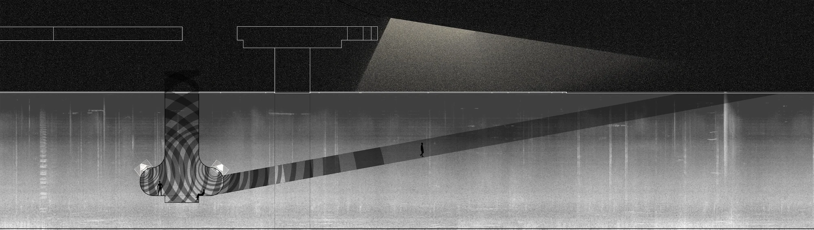
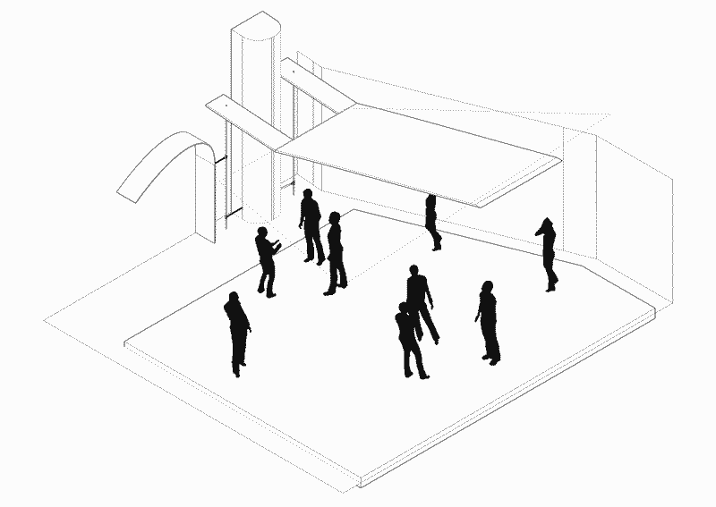

States of Exception

ACT 01 - Sacred/Profane
Within a predominant monoculture, the depictions of the sacred and the profane are weaponized to control and erase the imagery of counter-cultural movements, thereby further marginalizing their members. The sacred is elevated as an untouchable realm associated with established values, while the profane is cast as deviant and rebellious. Counter-cultural movements, seeking safety, work to unlearn narratives and reclaim symbolism to represent their journeys, create new spaces, and build community.


ACT 02 - THE ASSEMBLAGE
Building in research on the idea of sacred and profane, this ritual object is a representation of indigenous drum circles and adjacent customs and ritual practices. The materiality is a direct symbolism of the body (wood) and skin (leather). The shape is a shrine, a spiritual/holy space, a form of archiving, a vessel, a body, a temple. The preservation and acknowledgment of concrete is a symbol of the dichotomies between ritual practice and modern day sound system/club culture, with particular homage to warehouse raves and the use and abstraction of existing concrete structures as ritual as collective dance is a ritual practice. communities hold themselves together with simple bindings/shared experience, material propitiates of of leather, they are mailable natural and ever changing shapes.

ACT 03 - Dirt Palace
This space addresses the remnant between the circadian. a space for ritual sonic practices, transforming the profanity of existing surrounding infrastructure into a sacred ritual space through the manipulation and orientation of sound. The vibrations from the highway environment resonate in this cavity creating a meditative space addressing the intersection of the highway and an invisible block through the sacred and profane. In act 1 me and jay explored the sacred and profane though the dichotomies between club culture, church and religion in their symbolic and ritualistic intersection. During act 2 I Began to explore different ritual practices connected to sound and meditation, specifically the Lenape water drum and how meditation circles are structured to bring community together through sound and the body. The structure of the closed loop both symbolical and structurally influenced my artifact. In my artifact I explored ideas of skin, the body and preservation through natural and man made material studies with the use of leather concrete and wood. Thinking about the symbolism of the church in its sacredness and the profanity of underground music and counterculture music through the preservation of concrete as the preserved object. This artifact is a preservation of both the ritual practice of meditation and of the underground and profane. Structurally I was thinking of the closed circle, the way the communities of the sacred and profane hold each other together, each ritual is individual and self sufficient. When choosing a site for act 3 I was exploring the sonic properties of different spaces and a came across a patch of grass surrounded on all sides by highway infrastructure that I was instantly drawn to. The space connected to the idea of profane spaces as it was neglected, almost invisible but preserved in its blandness because of its location. In experiments exploring the sonic propertied of the materials in the landscape vibration became a very important element in the design process. The vibrations from the highways transmit sound into the space through the concrete of the highway columns, steel pipes and soft soil. I learned through taking sonograms of my recordings that high frequencies are transmitted though steel, resonant mid range frequencies are transmitted though concrete and low frequencies are transmitted mostly though soil. I then made small scale models where I played field recordings of the space and of the vibrations from the highway though their respective materials to think about how I can orient sound in the space, and transform the profanity of the highways into a sacred ritual and meditative space. I began excavating the neglected plot as to submerge the space into the soil. The columns from the highway protruding through the spaces to bring sound into the space, and the large aperture to bring out of the space became an important part of the design as it presented a ritual cycle of listening and performance, meditation and amplification receiving and transmitting. My material studies informed the program as various spaces within the excavation will sound different, with the main space translating full range sound from the highway. During the day the space is a place for meditation as the vibrations from the highway will be transmitted and resonate though the space though various materials, translating the profanity of sonic properties of the highway into a space for deep listening and meditation. Each material has a purpose in creative a unique experience as they all have different acoustic properties. During the day on the highway the space acts as a threshold unknowing of drivers as they contribute to a ritual act in passing. During the night, the space is open for use of other sonic practices produced by humans and the body, constructed with soffit mounted speakers embedded in the design, the space is designed to amplify sound produced by and for the underground upwards into the existing environment. During the night the passerbys and people on the highway engage in the ritual practice as listeners as sound is amplified acoustically and directionally by design. The design of overground and underground interaction addresses the intersections of the sacred and profane through vibration and acoustics, and creates a sacred and preserved space for both parties. Over time as this space is used through the nature of natural materials and vibration the acoustic propertied of the space and the way the space sounds will begin to morph and change over time. Ideally the space will never sound the same, making every ritual interaction with the space unique and personal, until the space is in a state that makes the space more profane than sacred in that it is not in use and becomes a part of the existing environment, the space is not allowed to be repaired in any way.
